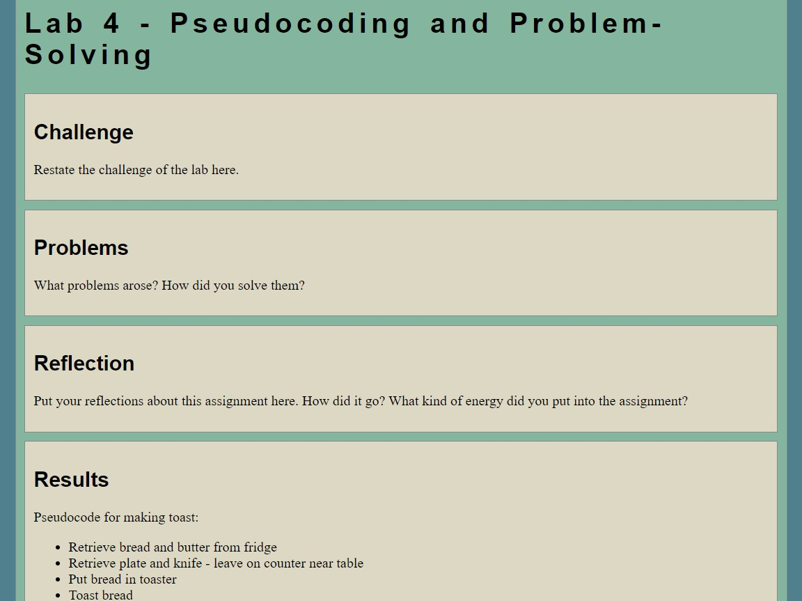

Lab 4 - Pseudocoding and Problem-Solving
Challenge
Restate the challenge of the lab here.
Problems
What problems arose? How did you solve them?
Reflection
Put your reflections about this assignment here. How did it go? What kind of energy did you put into the assignment?
Results
Pseudocode for making toast:
- Retrieve bread and butter from fridge
- Retrieve plate and knife - leave on counter near table
- Put bread in toaster
- Toast bread
- Remove toasted bread from toaster
- Place toasted bread on plate
- Spread butter on toasted bread with knife
- Put away bread, butter, and knife
Pseudocode for Rock-Paper-Scissors:
//Assign players to either designations "Player 1" or "Player 2"
//When round starts, provide 3 available inputs (rock, paper, scissors) for the first player
//Prompt them to select an input
//After both players have selected an input, decide if a player has reached a winning instance
//Winning instances: (rock beats scissors, scissors beats paper, paper beats rock)
//If both players play the same input, the round is a draw, and no one gets points. The round starts over
//The player that has reached the winning instance gets a point
//First player to reach two points wins the game
Screenshot of Web Page:
